A longer rounded cut with separate ends and softer bangs. Compare it with the two earlier cuts.
The earlier rounded profile and fringe.
The earlier longer cut.
Rounded profile, longer length, and defined lower locks.
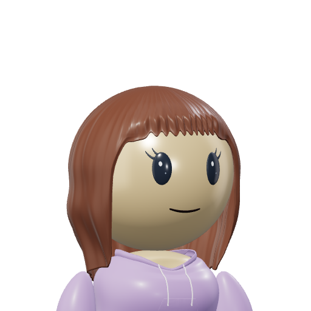
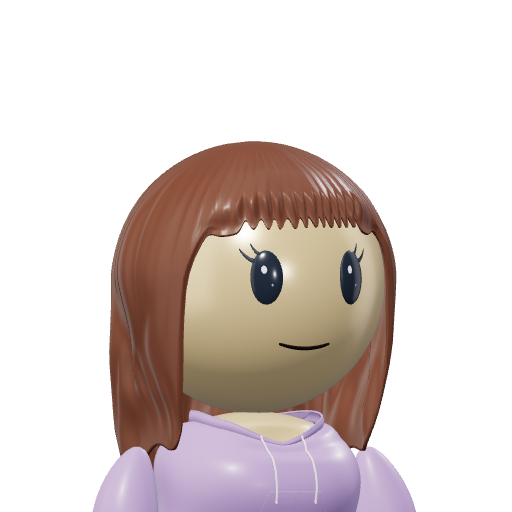
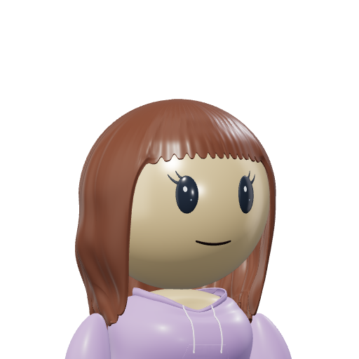
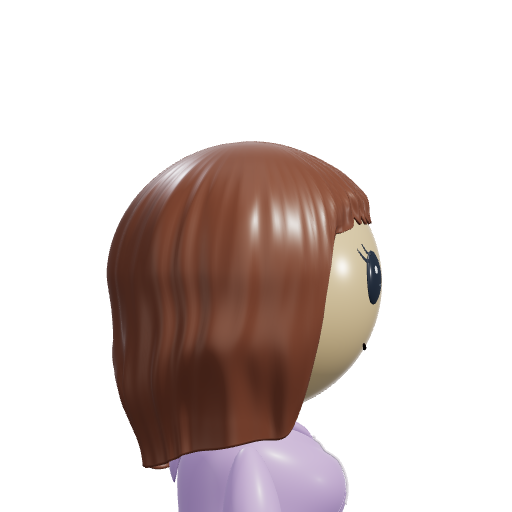
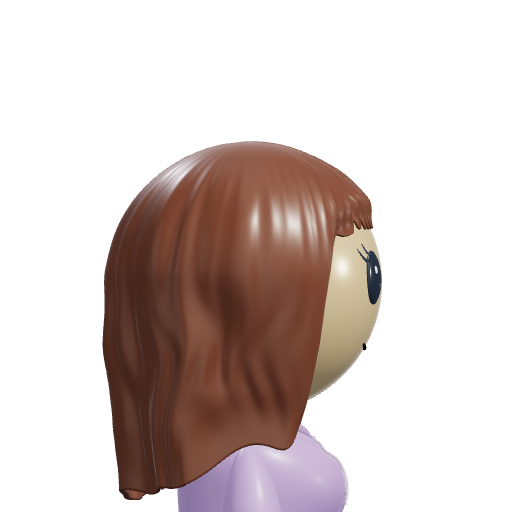
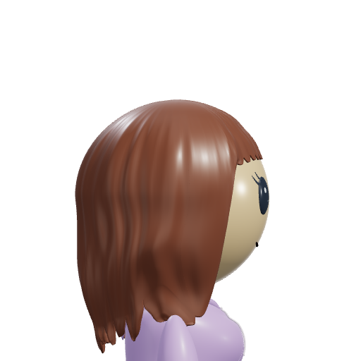
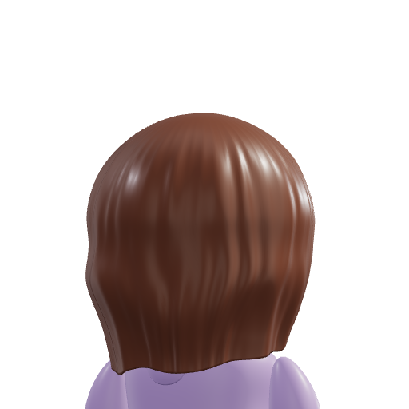
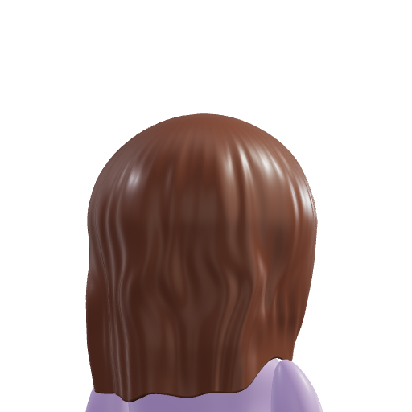
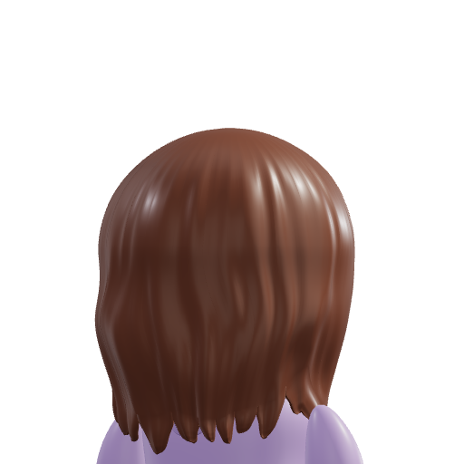
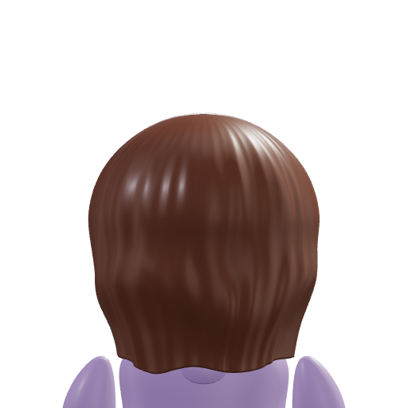
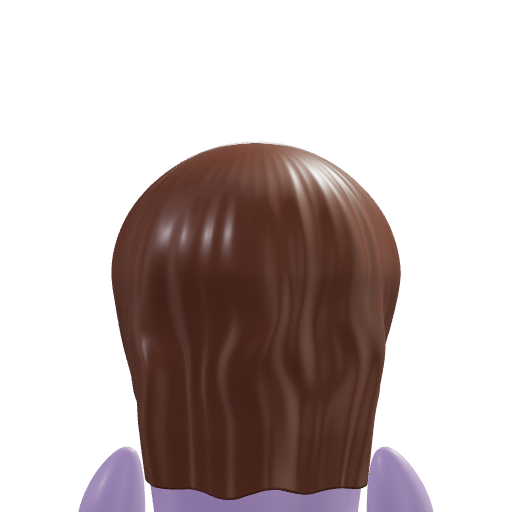
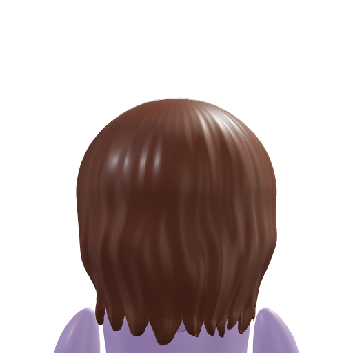
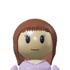
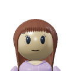
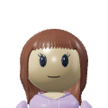
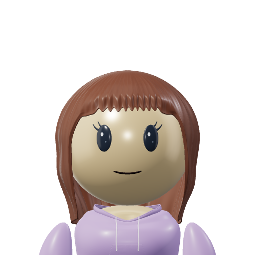
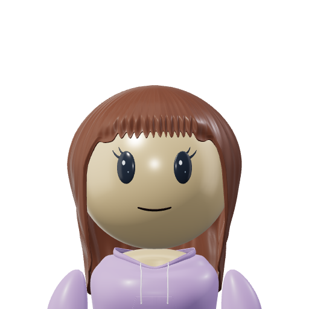
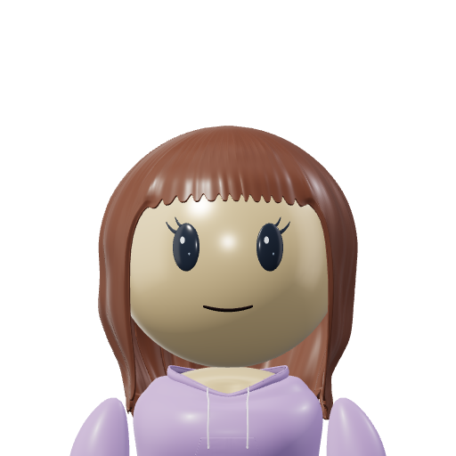
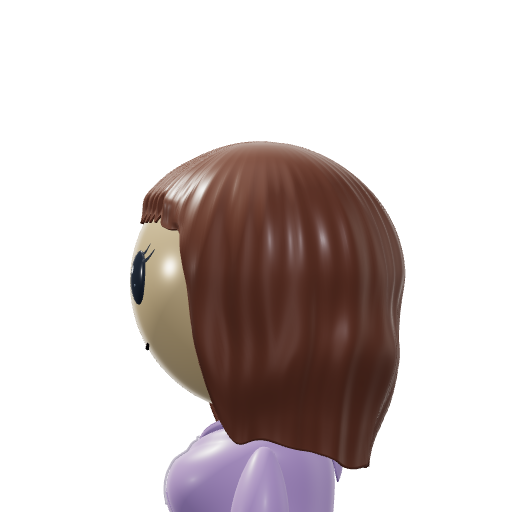
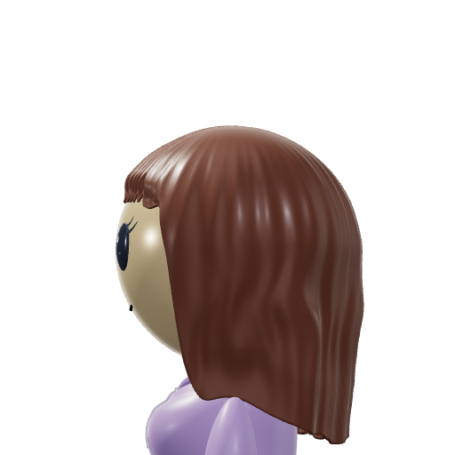
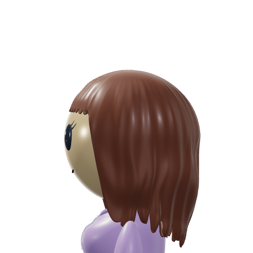
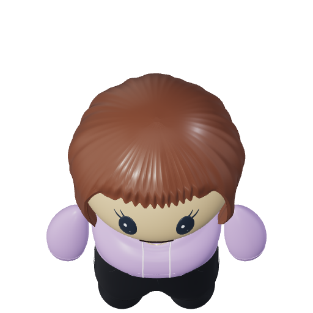
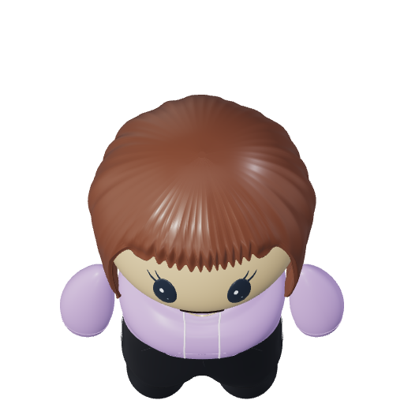
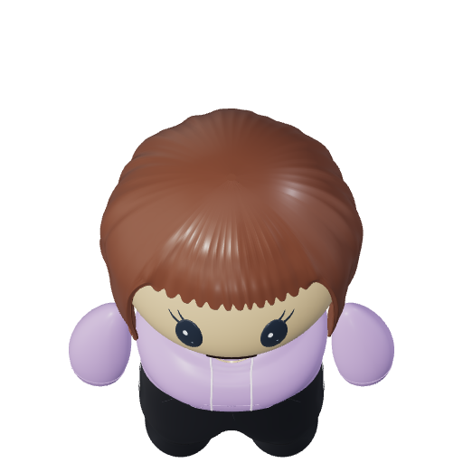
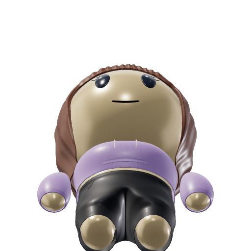
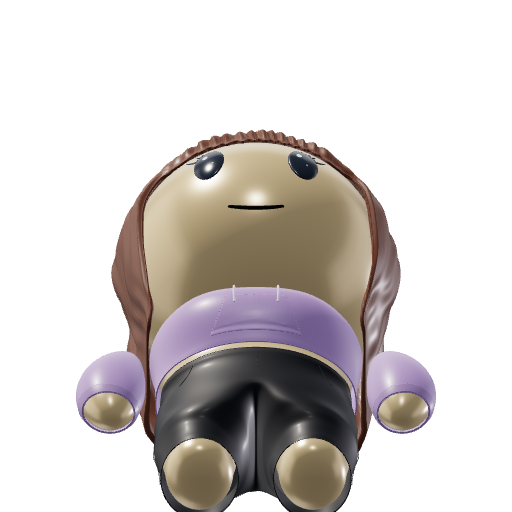
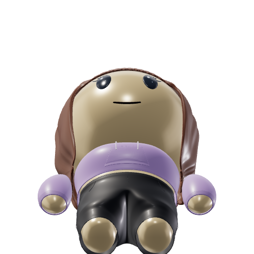